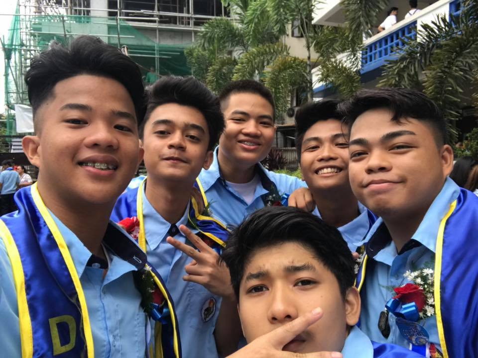
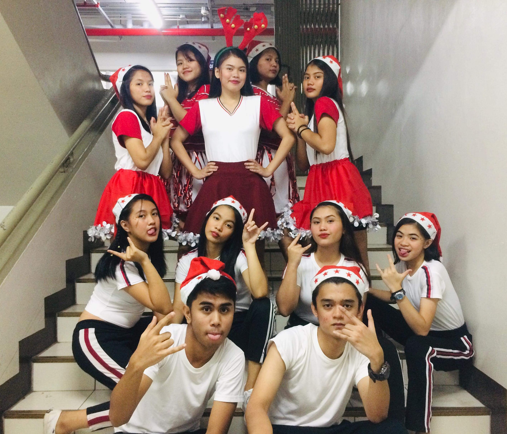

1 My life in teenage years was
full of fun and energy.
2It was the years that my body can fully move all day long without the feeling of getting tired.
3I remember when I was in
3rd year high school the time I made my first shot, drinking alcohol together with my high school friends.
4We almost hangout everyday and go to different places after class.
5Also it was also the time when I met and fell inlove with my first girlfriend.
6I regret the time when I was a teenager is becoming
obsessed and rebellious to my parents thinking that my parents could not support nor will be against with what I want.
7My life as a teenager is such wonderful.
8Though sometimes, I experienced doubts.
9I’m very much sure that I’m in the right track for my parents guide me always.
10Teenage life is the most
exciting, memorable experience that I will treasure.
11Doing some teen things is the one I will miss, because it was the time I met a lot of friends that help me grow.
12Waking up in the morning to go to
sports center to
run and play
soccer with my friends, then coming home with a delicious food in the table that my mom cooked and prepared is the one of the best days as a teenager because I don’t feel pressure or worry about things and just enjoy life.
13Teenage life, for me, is the golden period.
14Juveniles do not need to worry about responsibilities, jobs, and so forth.
15I will say that I
lived my life to the fullest as a
teenager and I will not regret every moment but treasure it.
16Because every mistakes tht I've made is not just a mistake but a
lesson learned for me.
Go Top

1 It’s sad to think how life is growing so fast these past years.
2Some days I wish I could go back in.
3Not to change anything but to feel a few things twice.
4I’m Mark Devon C Brillantes.
5The College life is very
happy and unforgettable experience in my life as a student.
6There are huge benefits of college life apart from getting education.
7During the first year of my college life is very though because I feel the pressure and nervous.
8And exciting at the same time because of the joy knowing that all my hardwork in grade school and high school life pays off.
9At first I don’t know which university I will choose but I remember that my older brother studied at
University of the east so I decided to enter that school too to have some benefits and
to save money from buying uniforms.
10At the moment, this
online learning for me is very stressful because we have no stable connection so sometimes I got mark absent for not being able to attend the class just because of the internet.
11online learning is very different for me and I hope the pandemic will end soon so the
face-to-face class will return again.
12My college life now is very though but I will try my very
best to graduate and overcome any challenges in life so that my mom and my dad someday will become proud of me as a student.
13Nonetheless, college life remains a memorable time for all of us.
14Not everyone is lucky enough to experience college life.
15People do not get the chance to go to college due to various reasons.
16Sometimes they do not have a strong financial background to do so while other times
they have other responsibilities to fulfill.
17The ones who have had a college life always wish to turn back time to live it all once again.
Go Top